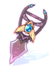

Wolfchev's Laboratory
| This quest or instance is repeatable. | ||
|---|---|---|
| Cooldown | Tickets Available | |
|
2 days and 23 hours |
Solo: 1 | Party: 2 |
Overview
| Requirements | |
|---|---|
| Base Level: | 150 |
| Starting Point: | lhz_dun04 151/276 |
| Party: | 1 or more players |
| Prerequisite(s): | Cursed Spirit Quest Factory Quest Biolabs Entrance Quest Einbroch Murder Quest President Quest Dangerous Rumors |
| Rewards | |
| Experience: | - |
This instance can be accessed only after doing all the necessary pre-requisite quests that is listed on the right. Do note that it will take considerable effort and time to complete them all.
Dangerous Rumors quest requires you to do all the other quests before it can be completed. It is important that you leave this quest for the last.
Wolfchev's Laboratory comprises of 4 rooms where you will fight different sets of mobs each time to reach the MVP.
In the first 3 rooms, you will face a large pack of wolves/baby wolves. Kill them all in order to proceed. There is a timer of around 120-140 seconds in the 2nd room so make sure you clear it before the timer is up. (Currently we don't know what will happen if the timer is up but its safe to say you don't want to reach it.)
In the 4th room, the bio labs MVP will spawn and you will need to defeat it before talking to Wolfchev for your rewards.
You have 4 hours to complete this instance.
Walkthrough
- Talk to the Researcher at
/navi lhz_dun04 151/276and select Going into the laboratory to generate the instance. - Click on the Laboratory Entrance to enter it and select Go inside.
- Kill all the Starving Lab animals to proceed.
- Look at the Manual Sheet (39, 168) to get directions about the valves. Remember them.
- Talk to the required Valve and do the operations given just before. Once you're done, a portal will open to access the second room.
- Kill all the mobs in this room to open the portal for the third room.
- Repeat the step above to access the final boss room (fourth room).
- A random Bio3 or 4 MVP will then spawn.
- Once you defeat it, Wolfchev will appear at the end of the room (137, 156). You must be within the MVP's range while it is being killed.
- You will be rewarded with one of the possible rewards (random chance).


Enemies
| Possible MvPs from Bio 3 | ||||
|---|---|---|---|---|
| Image | Name | Level | HP | Size/Race/Element |
| Lord Knight Seyren | 160 | 4,680,000 | Medium / Demi-Human / Fire 4 | |
| Assassin Cross Eremes | 160 | 4,230,000 | Medium / Demi-Human / Poison 4 | |
| Whitesmith Howard | 160 | 6,750,000 | Medium / Demi-Human / Earth 4 | |
| High Priest Margaretha | 160 | 4,800,000 | Medium / Demi-Human / Holy 4 | |
| Sniper Cecil | 160 | 4,140,000 | Medium / Demi-Human / Wind 4 | |
| High Wizard Kathryne | 160 | 4,500,000 | Medium / Demi-Human / Ghost 3 | |
| Possible MvPs from Bio 4 | ||||
| Image | Name | Level | HP | Size/Race/Element |
| Paladin Randel | 160 | 6,870,000 | Medium / Demi-Human / Holy 4 | |
| Creator Flamel | 160 | 4,230,000 | Medium / Demi-Human / Fire 4 | |

|
Professor Celia | 160 | 3,847,804 | Medium / Demi-Human / Ghost 3 |
| Champion Chen | 160 | 4,249,350 | Medium / Demon / Water 4 | |

|
Stalker Gertie | 160 | 4,057,279 | Medium / Demon / Poison 4 |
| Clown Alphoccio | 160 | 3,894,278 | Medium / Demi-Human / Wind 4 | |
| Gypsy Trentini | 160 | 3,894,278 | Medium / Demi-Human / Wind 4 | |
Rewards
| Image | Name | Description |
|---|---|---|

|
Salvage Cape | Possible to use Cicada Skin Shed Level 1.
Increase cooldown by 30sec of the skill, 2 times more on SP consumption of all skills when equipped. Upon de-equipping SP -1200. |

|
Ancient Gold Ornament [1] | If base Lv. 150, All Stats +2. If Swordman, Merchant, Thief class, ATK + 8%.
If Mage or Acolyte, MATK + 8%, increase 7% of heal amount. If Archer, DEX +3, increase long distance physical attack power 10%. |
| Bloody Cross |
When dealing melee physical damage, has a chance to autospell Hell Inferno Lv1. Increased refine rate increases the chance of activation. | |
|  | Guillotine Katar[1] |
Increases damage to Demihuman monsters by 50%. Increases damage of Cross Impact by 30%. Decreases Flee by 30. |
| Chilly Spell Book[2] |
Increases damage from Diamond Dust and Cold Bolt spells depending on refine level as well as increasing SP consumption. MATK +160. | |

|
Gigantic Lance |
ASPD -10, when you de-equip SP -600. Adds 20 sec on delay for reuse of Clashing Spiral. When pure STR is over 120, adds ATK 300. |
| Ghost Chill
Possible amount: x10 / x20 |
The darkness of Nifflheim is lumped into this. | |
| Will of Warrior
Possible amount: x10 / x20 |
A collection of biological relics from various warriors | |
| Blood Thirst
Possible amount: x10 / x20 |
Reactionary forces causes the thirst for blood |
Party Composition & MVP Tactics
Party Composition
You will need to walk through bio labs 3 and 4 in order to reach the entrance of WolfChev. This party composition takes in account the travelling as well as dealing with the MVP in the instance.
Do note that Bio Labs 3 and 4 + Wolfchev instance are arguably the hardest PVM content at the moment so it is highly advised for your group to be well-geared for this.
Equipment such as Cranial Shield + Alice Shield are a must. Damage Dealers are highly recommended to have powerful weapons that are at least +7 with White Knight/Abysmal Knight cards.
The absolute bare minimum party should be made up of.
- 1X Sura (Steelbody Tank)
- 1X Warlock (White Imprison Tank)
- 1X Archbishop (Full support)
- 1X Sorc (Dispel Duty)
- 1X Genetic (DPS)
- 1X Minstrel (Bragi)
Additional classes that will make life easier for everyone.
- Aimed Bolt Ranger - Great at taking out Professor Celia MVP or High Wizard Kathryne.
- Dragon Breath RK - Great at clearing Bio 3/4 monsters while clearing to the entrance of the instance.
- Wanderer - Allows your party to go without needing to use any SP consumables.
- Arch Bishops + Genetics - More DPS + Heals always helps.
It is almost impossible to do the run with just 1 arch bishop but it is possible if you have a wanderer at least to support AB's SP consumption.
MVP Tactics
This section will be classified into 2 subgroups. Bio 3 MVPs and Bio 4 MVPs.
Bio 3 MVPs Bio 3 MVPs are extremely easy compared to their bio 4 counter part.
- Send your Sura with steelbody in and have him position himself in a corner against the wall. This prevents knockbacks and will allow him to retain aggro.
- Get the Sorcerer to cast Land Protector to cancel out any Pneuma that High Priest Magaleta might cast.
- Get the damage dealers to SINGLE TARGET DPS the MVP.
If the MVP is High Wizard Kathryne, you'll need the genetics to DPS using Cart Cannon and ignore the single target DPS rule. In this case, DB RKs can help as well.
Bio 4 MVPs
Bio 4 MVPs are harder to deal with as they have Professor Celia who cast dispel and land protector. Key to this fight is dealing with dispel without losing too many party members.
- Get the Warlock Tank to stand in between the Sura and the rest of the party.
- Have the steelbodied Sura tank engage the MVP and stay alive long enough until Professor Celia dispels his steelbody + kills him.
- At this point, the aggro should be swapped over to Warlock Tank as the Warlock should be the next closest target.
- Dispel have around 20 seconds cooldown. You will need to get the damage dealers to IMMEDIATELY SINGLE TARGET DPS once the aggro is fixated onto the warlock.
- Ress the Sura ASAP and get him to auto-attack the MVP. If the warlock tank dies, the aggro will then transfer to the Sura.
- Rinse and repeat step 2-4 as many times as needed to kill the MVP.
If the MVP is Professor Celia, you'll need the genetics to DPS using Cart Cannon and ignore the single target DPS rule. In this case, DB RKs can help as well.
If the MVP is Paladin Randel, you'll need the sorcerer to dispel defender when he cast it so that ranged DPS can kill him quickly.